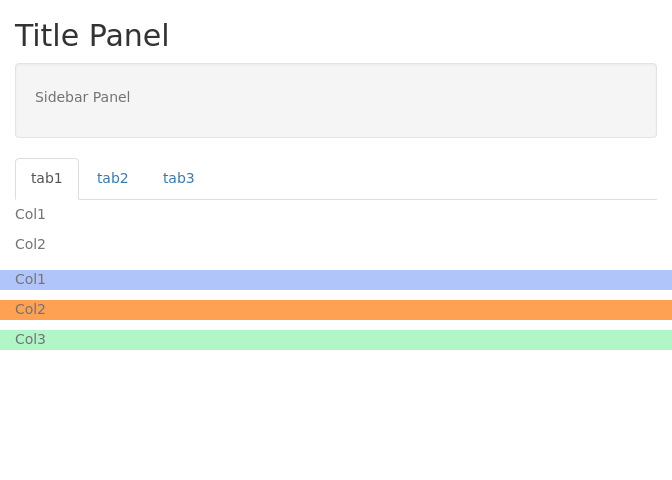
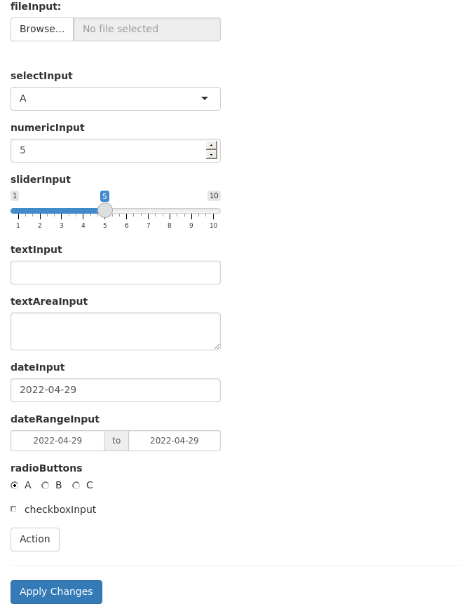

Lokesh Mano • 27-Apr-2022
This is an introduction to shiny web applications with R. Please follow the exercise to familiarise yourself with the fundamentals. And then you can follow instructions to build an app with interactive plots related to the Covid data. Code chunks starting with shinyApp() can be simply copy-pasted to the RStudio console and run. Generally, complete shiny code is saved as a text file, named for example, as app.R and then clicking Run app launches the app.
1 UI • Layout
This is an example to show the layout of widgets on a webpage using shiny functions. fluidPage() is used to define a responsive webpage. titlePanel() is used to define the top bar. sidebarLayout() is used to create a layout that includes a region on the left called side bar panel and a main panel on the right. The contents of these panels are further defined under sidebarPanel() and mainPanel().
In the main panel, the use of tab panels are demonstrated. The function tabsetPanel() is used to define a tab panel set and individual tabs are defined using tabPanel(). fluidRow() and column() are used to structure elements within each tab. The width of each column is specified. Total width of columns must add up to 12.
library(shiny)
ui <- fluidPage(
titlePanel("Title Panel"),
sidebarLayout(
sidebarPanel(
helpText("Sidebar Panel")
),
mainPanel(tabsetPanel(
tabPanel("tab1",
fluidRow(
column(6,helpText("Col1")),
column(6,
helpText("Col2"),
fluidRow(
column(4,style="background-color:#b0c6fb",
helpText("Col1")
),
column(4,style="background-color:#ffa153",
helpText("Col2")
),
column(4,style="background-color:#b1f6c6",
helpText("Col3")
)
)
)
)
),
tabPanel("tab2",
inputPanel(helpText("Input Panel"))
),
tabPanel("tab3",
wellPanel(helpText("Well Panel"))
)
)
)
)
)
server <- function(input,output){}
shinyApp(ui=ui,server=server)plot

2 UI • Widgets • Input
Input widgets are used to accept content interactively from the user. These widgets usually end in Input like selectInput(). Below are usage examples of several of shiny’s built-in widgets. Every widget has a variable name which is accessible through input$ in the server function. For example, the value of a variable named text-input would be accessed through input$text-input.
shinyApp(
ui=fluidPage(
fluidRow(
column(6,
fileInput("file-input","fileInput:"),
selectInput("select-input",label="selectInput",choices=c("A","B","C")),
numericInput("numeric-input",label="numericInput",value=5,min=1,max=10),
sliderInput("slider-input",label="sliderInput",value=5,min=1,max=10),
textInput("text-input",label="textInput"),
textAreaInput("text-area-input",label="textAreaInput"),
dateInput("date-input",label="dateInput"),
dateRangeInput("date-range-input",label="dateRangeInput"),
radioButtons("radio-button",label="radioButtons",choices=c("A","B","C"),inline=T),
checkboxInput("checkbox","checkboxInput",value=FALSE),
actionButton("action-button","Action"),
hr(),
submitButton()
)
)
),
server=function(input,output){},
options=list(height=900))plot

3 UI • Widgets • Outputs
Similar to input widgets, output widgets are used to display information to the user on the webpage. These widgets usually end in Output like textOutput(). Every widget has a variable name accessible under output$ to which content is written in the server function. Render functions are used to write content to output widgets. For example renderText() is used to write text data to textOutput() widget.
shinyApp(
ui=fluidPage(fluidRow(column(6,
textInput("text_input",label="textInput",value="<h3 style='color:red'>Red text</h3>"),
hr(),
htmlOutput("html_output"),
textOutput("text_output"),
verbatimTextOutput("verbatim_text_output"),
tableOutput("table_output"),
plotOutput("plot_output",width="300px",height="300px")
))),
server=function(input, output) {
output$html_output <- renderText({input$text_input})
output$text_output <- renderText({input$text_input})
output$verbatim_text_output <- renderText({input$text_input})
output$table_output <- renderTable({iris[1:3,1:3]})
output$plot_output <- renderPlot({
plot(iris[,1],iris[,2])
})
},
options=list(height=700))plot

In this example, we have a text input box which takes user text and outputs it in three different variations. The first output is html output htmlOutput(). Since the default text is html content, the output is red coloured text. A normal non-html text would just look like normal text. The second output is normal text output textOutput(). The third variation is verbatimTextOutput() which displays text in monospaced code style. This example further shows table output and plot output.
4 Dynamic UI
Sometimes we want to add, remove or change currently loaded UI widgets conditionally based on dynamic changes in code execution or user input. Conditional UI can be defined using conditionalPanel(), uiOutput()/renderUI(), insertUI() or removeUI. In this example, we will use uiOutput()/renderUI().
In the example below, the output plot is displayed only if the selected dataset is iris.
shinyApp(
ui=fluidPage(
selectInput("data_input",label="Select data",
choices=c("mtcars","faithful","iris")),
tableOutput("table_output"),
uiOutput("ui")
),
server=function(input,output) {
getdata <- reactive({ get(input$data_input, 'package:datasets') })
output$ui <- renderUI({
if(input$data_input=="iris") plotOutput("plot_output",width="400px")
})
output$plot_output <- renderPlot({hist(getdata()[, 1])})
output$table_output <- renderTable({head(getdata())})
})plot

Here, conditional UI is used to selectively display an output widget (plot). Similarly, this idea can be used to selectively display any input or output widget.
5 Session info
sessionInfo()## R version 4.1.3 (2022-03-10)
## Platform: x86_64-pc-linux-gnu (64-bit)
## Running under: Ubuntu 18.04.6 LTS
##
## Matrix products: default
## BLAS: /usr/lib/x86_64-linux-gnu/openblas/libblas.so.3
## LAPACK: /usr/lib/x86_64-linux-gnu/libopenblasp-r0.2.20.so
##
## locale:
## [1] LC_CTYPE=C.UTF-8 LC_NUMERIC=C LC_TIME=C.UTF-8
## [4] LC_COLLATE=C.UTF-8 LC_MONETARY=C.UTF-8 LC_MESSAGES=C.UTF-8
## [7] LC_PAPER=C.UTF-8 LC_NAME=C LC_ADDRESS=C
## [10] LC_TELEPHONE=C LC_MEASUREMENT=C.UTF-8 LC_IDENTIFICATION=C
##
## attached base packages:
## [1] stats graphics grDevices utils datasets methods base
##
## other attached packages:
## [1] shiny_1.7.1 ggimage_0.3.1 treeio_1.18.1
## [4] ggtree_3.2.1 pheatmap_1.0.12 swemaps_1.0
## [7] mapdata_2.3.0 maps_3.4.0 ggpubr_0.4.0
## [10] cowplot_1.1.1 ggthemes_4.2.4 scales_1.2.0
## [13] ggrepel_0.9.1 wesanderson_0.3.6 forcats_0.5.1
## [16] stringr_1.4.0 purrr_0.3.4 readr_2.1.2
## [19] tidyr_1.2.0 tibble_3.1.6 tidyverse_1.3.1
## [22] reshape2_1.4.4 ggplot2_3.3.5 formattable_0.2.1
## [25] kableExtra_1.3.4 dplyr_1.0.8 lubridate_1.8.0
## [28] leaflet_2.1.1 yaml_2.3.5 fontawesome_0.2.2.9000
## [31] captioner_2.2.3 bookdown_0.26 knitr_1.38
##
## loaded via a namespace (and not attached):
## [1] colorspace_2.0-3 ggsignif_0.6.3 ellipsis_0.3.2
## [4] fs_1.5.2 aplot_0.1.3 rstudioapi_0.13
## [7] farver_2.1.0 fansi_1.0.3 xml2_1.3.3
## [10] splines_4.1.3 cachem_1.0.6 jsonlite_1.8.0
## [13] broom_0.8.0 dbplyr_2.1.1 compiler_4.1.3
## [16] httr_1.4.2 backports_1.4.1 assertthat_0.2.1
## [19] Matrix_1.4-0 fastmap_1.1.0 lazyeval_0.2.2
## [22] cli_3.3.0 later_1.3.0 leaflet.providers_1.9.0
## [25] htmltools_0.5.2 tools_4.1.3 gtable_0.3.0
## [28] glue_1.6.2 Rcpp_1.0.8.3 carData_3.0-5
## [31] cellranger_1.1.0 jquerylib_0.1.4 vctrs_0.4.1
## [34] ape_5.6-2 svglite_2.1.0 nlme_3.1-155
## [37] crosstalk_1.2.0 xfun_0.30 ps_1.7.0
## [40] rvest_1.0.2 mime_0.12 lifecycle_1.0.1
## [43] rstatix_0.7.0 promises_1.2.0.1 hms_1.1.1
## [46] parallel_4.1.3 RColorBrewer_1.1-3 curl_4.3.2
## [49] gridExtra_2.3 ggfun_0.0.6 yulab.utils_0.0.4
## [52] sass_0.4.1 stringi_1.7.6 highr_0.9
## [55] tidytree_0.3.9 rlang_1.0.2 pkgconfig_2.0.3
## [58] systemfonts_1.0.4 evaluate_0.15 lattice_0.20-45
## [61] patchwork_1.1.1 htmlwidgets_1.5.4 labeling_0.4.2
## [64] processx_3.5.3 tidyselect_1.1.2 plyr_1.8.7
## [67] magrittr_2.0.3 R6_2.5.1 magick_2.7.3
## [70] generics_0.1.2 DBI_1.1.2 pillar_1.7.0
## [73] haven_2.5.0 withr_2.5.0 mgcv_1.8-39
## [76] abind_1.4-5 modelr_0.1.8 crayon_1.5.1
## [79] car_3.0-12 utf8_1.2.2 tzdb_0.3.0
## [82] rmarkdown_2.14 grid_4.1.3 readxl_1.4.0
## [85] callr_3.7.0 reprex_2.0.1 digest_0.6.29
## [88] webshot_0.5.3 xtable_1.8-4 httpuv_1.6.5
## [91] gridGraphics_0.5-1 munsell_0.5.0 viridisLite_0.4.0
## [94] ggplotify_0.1.0 bslib_0.3.1